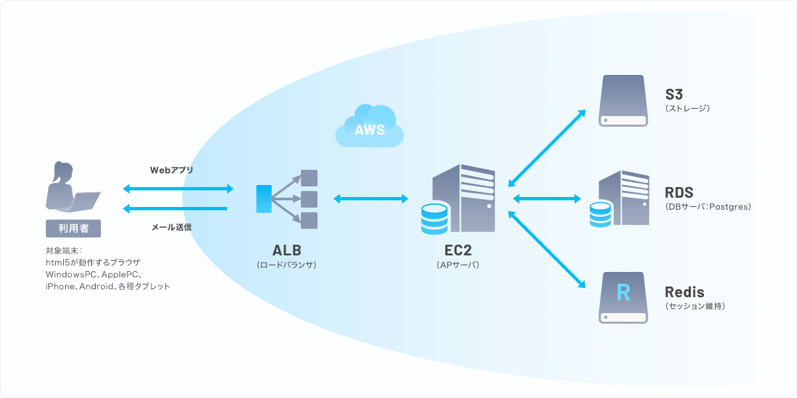

イットbuilderは、図に示すAWSのサーバ構成、表に示すミドルウェアで動作します。
AWS以外のクラウド環境、オンプレミス環境での構築をご希望の場合は、ご相談ください。

| フレームワーク | Spring |
| Webサーバ | Apache HTTPD |
| APサーバ | Tomcat |
| 実行環境 |
OpenJDK
Perl |
| メール機能 |
Postfix
James Sisimai SPF DKIM DMARC |
| DNS | Amazon Route53 |
| 認証 |
Openssl
OpenLDAP OAuth SAML |
| データベース | PostgreSQL |
| セッション維持 | Redis |
| PDF帳票出力 | JasperReports Library |
| ウィルスチェック | ClamAV |